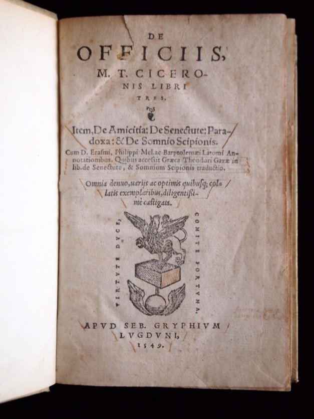
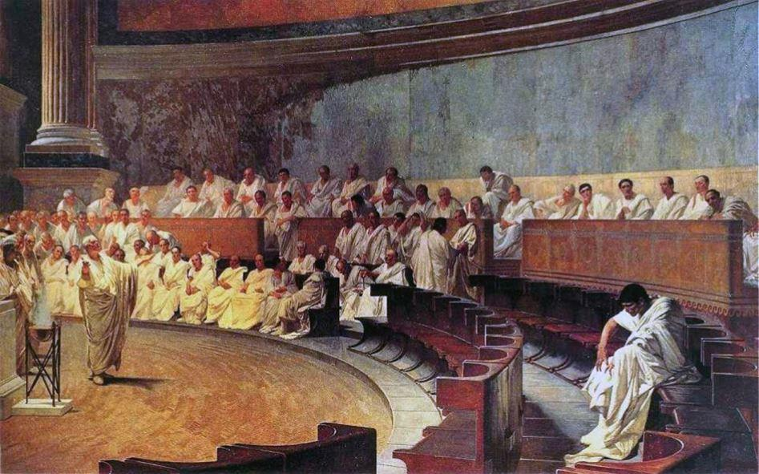
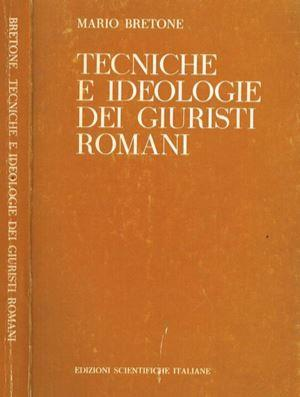
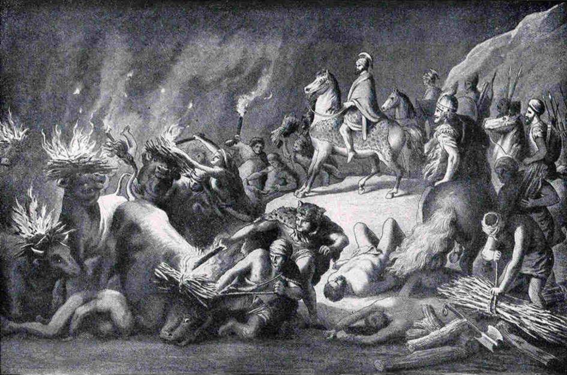
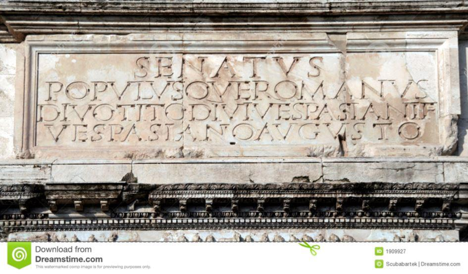

Les débats sur la souveraineté révélés par les évolutions des représentations de la Res Publica
par Jacques SAPIR
Madame Claudia Moatti, professeure à Paris-8 est spécialiste de l’histoire intellectuelle, est une personnalité reconnue du monde universitaire français. Elle vient de publier un ouvrage sur l’évolution de la conception de la « chose publique », de la res publica dans le monde romain1 . Cet ouvrage fera certainement référence. Il traite non seulement des interprétations de la notion de « chose publique », mais aussi des notions de légitimité et de droit. Derrière tout cela, nous avons bien entendu la question de la souveraineté.
Il s’agit d’un ouvrage très solidement appuyé sur des références nombreuses et précises, mais qui jamais ne viennent troubler l’immense plaisir, et l’immense intérêt, que l’on prend à se lecture.
Car, cet ouvrage peut être lu tant par le spécialiste et l’érudit, que par le citoyen qui porte un intérêt aux choses publiques. Cet ouvrage nous plonge dans la vie publique romaine, des origines jusqu’à l’Empire, vers la fin du IVème siècle de notre ère. Il nous emmène dans les temps troublés de la fin de la République, dans les luttes sociales et politiques qui marquent les périodes des Gracques et de Sylla. Il nous fait côtoyer des auteurs célèbres, comme Cicéron, Suétone, Tite-Live ou Dion Cassius. Cet ouvrage cependant s’inscrit dans une logique explorée par Madame Moatti depuis de nombreuses années. Son analyse de la pensée cicéronienne, et de sa justification du senatus consulte ultime, acte d’une extrême gravité renvoie à des travaux antérieurs2. De même, les passages qui s’interrogent sur le leg des auteurs de la fin de la République (le Ier siècle avant notre ère) sont la poursuite de travaux eux-aussi antérieurs3. C’est dire que ce livre représente une forme d’aboutissement de travaux qui s’étalent sur de nombreuses années. Il répond aussi à un autre ouvrage, publié sous la direction de Claudia Moatti et de Michelle Riot-Sarcey Pourquoi se référer au passé4.
Il porte en lui une question : comment se fait-il que nous déclinions toujours le passé au présent ? Car, les références, tant aux termes qu’aux notions issues du monde romain, sont multiples et constantes dans la vie politique. Mais, ces déclinaisons sont-elles fidèles à ce que ces notions pouvaient représenter dans le monde romain. Au-delà, il eut-il une représentation unique de ces notions à Rome, ou bien ces notions ne furent-elles pas plutôt l’objet de rivalités et d’interprétations contradictoires ? N’étant pas personnellement un spécialiste de l’histoire romaine, même si j’en connais ce que mes professeurs de Lycée se sont efforcés de faire entrer dans ma tête (dure), c’est donc bien sur l’histoire de ces dites notions, et sur leur pertinence dans le contexte actuel, que portera plutôt cette recension.
LES ENJEUX D’UN LIVRE
Claudia Moatti commence par poser une question qui reste aujourd’hui plus que jamais d’une très grande pertinence. Elle écrit ainsi dans son introduction : « Philosophes et historiens du ‘républicanisme’ ont pourtant cherché dans l’Antiquité l’origine fondatrice. De Leonardo Bruni à Machiavel ou Bodin, de Rousseau, Babeuf, Condorcet aux fédéralistes américains, le modèle romain dit ‘républicain’ a été diversement interprété et a donné naissance à une multiplicité d’interprétations5 ». C’est une évidence. Nous sommes tous, très largement, que ce soit consciemment ou à notre insu, héritiers en matière politique et en matière du droit des usages et des institutions de cette période, même si cet héritage est aussi largement un détournement de sens6.
On ne convoque pas impunément le passé au présent. Pourtant, en dépit de l’anachronisme, la comparaison est lourde de sens. Dans son petit livre publié en 2002, l’historien britannique Fergus Millar, posait d’ailleurs fort bien cette question7. Alors, qu’est-ce qui fait notre intérêt ? Ici encore je laisse la parole à Claudia Moatti :
« Pourquoi une ancienne société fondamentalement inégalitaire et ses idéaux aristocratiques gardent jusqu’à aujourd’hui encore une telle force d’attraction pour ceux qui tentent de penser la liberté républicaine? Pourquoi donc le détour par l’antique s’impose-t-il de manière aussi insistante ?8 ».
Il y a probablement une raison principale dans cette force d’attraction, une raison qui est permanente depuis la Révolution de 1789 jusqu’à nos jours : l’idée que ce qui se joue en permanence dans la politique c’est l’affrontement entre le peuple et une couche dominante, qu’on l’appelle oligarchie ou aristocratie. C’est pourquoi le sort tragique de Tiberius Gracchus, puis celui de son frère, Caius Gracchus, continue de nous parler9. C’est pourquoi nous pouvons aussi nous retrouver dans la lutte implacable des populares, les partisans du peuple, contre les optimates, les partisans du Sénat, dans les personnages de Marius et de Sylla. Ce dernier nous est aussi familier par un vers de Victor Hugo, tiré du poème Ultima Verba qui fut publié dans Les Chatiments en 1853 :
« Si l’on n’est plus que mille, eh bien, j’en suis ! Si même
Ils ne sont plus que cent, je brave encore Sylla ; »
Et ce n’est pas pour rien si le nom de Sylla détourna le mot de « dictature » de son ancienne signification, où ce mot désignait une magistrature exceptionnelle, mais prévue dans le cadre de la République, pour devenir un synonyme de Tyrannie10. Même dans la culture populaire, l’histoire de la fin de la République et du passage à l’Empire reste vivace, comme en témoigne le succès de la série des films « Star Wars 11».
Parmi les autres raisons, il faut certainement compter avec la longue tradition de continuité (réelle ou mythifiée) dans le droit français, mais aussi dans les structures institutionnelles. Enfin, il y a aussi le monde des représentations. Les acteurs du jeu politique, et ce fut vrai de la Révolution française au début du XXème siècle, parce que le latin et la culture romaine faisaient partie de l’éducation, se représentaient en acteurs justement de l’histoire romaine. Oui, l’histoire romaine joue un rôle important dans notre culture politique, et ceci n’en rend que plus dommage l’abandon de l’enseignement du latin au Collège (à partir de la classe de 5ème) qu’avait décidé Mme Najat Vallaud-Belkacem, alors Ministre de l’Education nationale sous le quinquennat de François Hollande.
QU’EST-CE QUE LA RES PUBLICA ?
Le premier point sur lequel ce livre est celui de la définition de la « chose publique ». Claudia Moatti a recours à Cicéron dont elle produit une citation12 : « tout peuple qui sur tel rassemblement d’une multitude (…) toute cité qui est l’organisation du peuple ; toute res publica qui est comme je l’ai dit la chose du peuple, doit être dirigée par un conseil pour pouvoir durer13». Ce qui est ici important est la manière dont Cicéron hiérarchise le passage de la « multitude » au peuple, par l’existence d’intérêts communs, puis présente la Cité comme cadre organisateur de ce « peuple ».
Claudia Moatti souligne le côté remarquable du texte de Cicéron par sa tentative de clarification 14. Elle rappelle alors, que la « Cité » ne désigne pas une simple ville (oppidum) mais qu’elle décrit le cadre dans lequel s’organise un « peuple » de citoyens, un peuple dont la présence est obligatoire pour rendre la justice 15, tout comme pour édicter des lois. La citoyenneté est ici une notion fondamentale. Appartenir au « peuple romain », c’est avoir le droit d’agir en interaction avec les autres citoyens sur le territoire de la « Cité ». Ce sont donc les citoyens qui constituent la « Cité »16 . La res publica ne se pense donc qu’en relation avec le « peuple ». Elle définit les relations et les conflits au sein de ce « peuple ». De ce point de vue, c’est bien l’égalité juridique des citoyens, cette égalité que l’on retrouve dans la formule archaïque populus plebsque qui est centrale. Avec cette égalité juridique, le « peuple » prend réellement un sens politique et se constitue comme acteur de la politique17. Il est alors important de conserver en mémoire qu’aux temps premiers de la République le peuple romain est à la fois un acteur dans la cité et une entité pour les relations entre la cité et l’étranger18. Retenons ici cette distinction importante qui confirme la centralité de la relation interne/externe. Il ne peut donc y avoir de relations politiques et juridiques, de conflits aussi autour de ces relations, qu’au sein d’une entité souveraine et distincte des autres. La notion de souveraineté est donc primordiale mais aussi centrale à l’existence de la res publica. Mais, cette « chose publique » ne peut se constituer qu’à travers l’égalité juridique des citoyens qui leur assure (ou doit leur assurer) un droit égal à la participation politique, aux choix dans la vie de la « Cité »19.
De fait, Cicéron, dans son ouvrage De Officis, analyse la pluralité des possibles forme d’organisation, qu’elles soient liées à la naissance ou la langue. Mais, pour lui, la forme décisive est bien celle qui unit les citoyens. Cette forme n’est pas simplement descriptive mais elle définit une société politique20, et c’est en cela qu’une « Cité » n’est pas une ville, un simple oppidum. Il faut donc tenir compte des deux niveaux de raisonnement. Pour une simple description, on peut procéder de l’ascendance vers la langue.
Mais, pour l’analyse qui doit nécessairement avoir une dimension dynamique, seul compte le concept de citoyen, formant un peuple dans le cadre d’une cité politique. La notion de « peuple » est donc principalement politique et non ethnique21. Il faut donc comprendre ce qui constitue un « peuple ». Quand nous parlons d’un « peuple » nous ne parlons pas d’une communauté ethnique ou religieuse, mais de cette communauté politique d’individus rassemblés qui prend son avenir en mains 22, du moins aux origines de la République. Le « peuple » auquel on se réfère est un peuple « pour soi », qui se construit dans l’action et non un peuple « en soi », ce qui ne serait qu’une « multitude ». Se référer à cette notion de souveraineté, vouloir la défendre et la faire vivre, se définir donc comme souverainiste, implique de comprendre que nous vivons dans des sociétés hétérogènes et que l’unité de ces dernières se construit, et se construit avant tout politiquement. Cette unité n’est jamais donnée ni naturelle23.
Pourtant, cette définition va évoluer avec les conflits sociaux que Rome connaitra, en particulier à partir du IIème siècle avant notre ère. Se fera jour, alors, une définition bien plus conservatrice de « l’intérêt commun », dont Cicéron est largement le codificateur24.
LE RÔLE DU CONFLIT SOCIAL DANS LA VIE DE LA CITÉ ET DANS LA CONSTRUCTION DE LA « CHOSE PUBLIQUE »
Cette transformation de la notion de la « chose publique » que décrit abondamment Claudia Moatti découle des conflits nombreux dont l’histoire de la république romaine résonne25. Mais, ces conflits furent aussi un mécanisme de construction des institutions de cette même république26. Elle note ainsi que les sécessions de la Plèbe au début de la République permirent de limiter le pouvoir de l’aristocratie, de modérer les aspects les plus inégalitaires de la République originelle et ouvrirent peu à peu de nouveaux espaces de libertés publiques 27. De fait les membres de la Plèbe furent autorisés à se présenter à la Questure en -409, aux magistratures équestres en – 368, à se faire élire comme censeur en – 351 et comme préteur en -33628.
Elle ajoute alors : « Ainsi l’analyse en terme de partes repose sur une vision plurielle et ouverte de la cité, dont l’unité est constamment en construction… »29. De fait, le conflit y est une part du jeu politique ; c’est lui qui « construit » la res publica. Ce conflit va se poursuivre à travers l’opposition entre ceux que l’on appelle les populares ou représentants du parti « du peuple » et les optimates qui sont les représentants de l’élite sénatoriale30. L’enjeu social et économique des terres confisquées aux vaincus, terres qui constituent l’ager publicus, devient dès lors central31. De fait, à cette époque, l’absence ou l’imprécision du cadastre rend possibles les abus des plus riches32. De ce déséquilibre économique et sociale est issu la volonté, à chaque incident plus claire, du Sénat de s’accaparer la souveraineté et l’initiative des lois33.
Ces conflits trouvent leur origine dans les conséquences sociales de la IIème Guerre Punique (contre Carthage) mais aussi celles provenant de l’expansion de Rome. Le passage de la petite propriété foncière aux grandes exploitations dont la main-d’œuvre est essentiellement composée d’esclaves, mais
aussi l’accaparement des terres publiques par l’aristocratie, créent une situation intenable34.
Mais, à ce conflit qui est « interne » à l’espace politique romain vient s’ajouter celui lié à la longue, et difficile, intégration des « italiens », ces membres des tribus soumises puis alliées de Rome, mais auxquels cette même Rome dénia, pendant longtemps, la citoyenneté35.
Les conflits sont donc légitimes, à condition qu’ils puissent déboucher sur des compromis permettant de les dépasser. Telle était d’ailleurs la fameuse remarque faite par Guizot sur l’histoire des institutions qui caractérisait la « civilisation européenne » en 182836. Dans sa septième leçon, il analyse le processus d’affranchissement des communes, ce qui le conduit d’ailleurs à la célèbre conclusion que voici : « (…) la lutte, au lieu de devenir un principe d’immobilité, a été une cause de progrès ; les rapports des diverses classes entre elles, la nécessité où elles se sont trouvées de se combattre et de se céder tour à tour, la variété de leurs intérêts et de leurs passions, le besoin de se vaincre sans pouvoir en venir à bout, de là est sorti peut être le plus énergique, le plus fécond principe de développement de la civilisation européenne37. » Cette idée que le conflit est un facteur de développement, de construction des institutions, fut d’ailleurs reprise par Commons qui travaillait sur les luttes des petits paysans américains face aux grandes compagnies38. Cette idée correspond aujourd’hui à l’un des points les plus importants de la théorie institutionnaliste. Il est ici dommage que Claudia Moatti n’ait pas fait référence dans son livre aux auteurs qui lui auraient permis de dresser un parallèle éclairant sur cette question.
DEUX VISIONS DE LA « CHOSE PUBLIQUE »
Cette res publica va donc donner lieu, au travers des conflits, à deux représentations antagoniques. Il y a celle qui voit en la res publica l’ensemble des affaires politiques issues des interactions entre les citoyens et il y a celle qui voit en la res publica une forme, la « grande affaire »39. Cette tendance à une idéalisation de la res publica conduit donc à prétendre son indivisibilité et à proclamer que le conflit est nécessairement néfaste40. Mais, le problème ne réside pas seulement dans une fétichisation de la res publica à laquelle répond une réification du peuple. Elle se concrétise dans deux visions opposées des magistrats, mais aussi – implicitement – en deux visions de l’exercice de la souveraineté41. Claudia Moatti montre bien comment la définition d’un espace politique homogène et stable correspond à l’idéologie des élites sénatoriales qui se refusent à tout compromis et qui s’engagent progressivement, à partir de l’épisode des Gracques (-135 à – 123) dans une escalade de la violence42. Alors que la première vision, celle marquée par l’assimilation de la res publica en l’ensemble des affaires politiques concernant les citoyens, pose que les magistrats et le Sénat sont in potestas populi ou sous le pouvoir du peuple43, la seconde vision se représente les magistrats comme recevant la potestas du peuple pour le diriger44. De fait, plus le réel sera dévasté par les conflits internes et marqué par un raidissement de l’élite sénatoriale qui se refuse désormais à tout compromis, plus on tendra à la construction d’une res publica idéale et bien ordonné d’où tout conflit est exclu45.
C’est principalement Cicéron qui sera à la fois le représentant et l’acteur de cette transformation. Il va élaborer, au fil de ses œuvres, la res publica comme une entité abstraite et non plus comme la somme des interactions par lesquelles les citoyens définissent des intérêts communs46. Dans le même temps, Cicéron va construire un discours dans lequel les magistrats représentent un « peuple » juridique mais qui n’est plus un peuple social47. Le double processus de fétichisation de la chose publique et de réification du peuple est ainsi achevé. Cela le conduit à considérer que tous ceux qui s’élèvent contre le Sénat sont des « séditieux » et qu’il faut mener contre eux une guerre à outrance48. Le vocabulaire de la guerre emplit alors l’espace civique. Il utilise dans De re publica la métaphore de la tutelle49, une métaphore qu’il reprendra dans De officis50. Le peuple est donc considéré comme le fils mineur du Sénat, dans un parallèle avec le droit privé et dans une référence aux pouvoirs du paterfamilias romain. Mais un autre parallèle vient alors à l’esprit. Dans ce « peuple » mis en tutelle par l’élite sénatoriale on peut retrouver comme un écho lointain de la volonté de mise en tutelle du peuple actuel par « ceux qui savent », à la condition que ces derniers fassent preuve de « pédagogie ». Le parallèle est d’autant plus tentant que, peu à peu, les décisions du peuple sont contestées voire révoquées, comme ce fut le cas avec le référendum de 2005 et le traité de Lisbonne qui suivit en 2007. Mais, là où Cicéron usait d’une métaphore juridique, qui restait d’une certaine mesure dans le champ du politique, car le droit est aussi une expression du politique, aujourd’hui l’oligarchie utilise l’extension d’une légitimité scientifique (ou plus exactement pseudo-scientifique) dans un domaine où elle n’a rien à faire51. De cela, pour revenir au livre de Claudia Moatti et à Rome, il en découle une vision de la liberté entre inégaux qui rompt justement avec l’égalité juridique proclamée entre les citoyens52. C’est donc bien une vision du pacte civique très différente du pacte démocratique.
QUI, DU PEUPLE OU DU SÉNAT, DÉTIENT LA SOUVERAINETÉ ?
On ne peut donc plus esquiver cette question : qui détient réellement la souveraineté. C’est une question qui, elle aussi, se pose aujourd’hui. Pourtant, aux origines de la république romaine la question semblait tranchée. Mario Bretone montre que la volonté du peuple (iussum populi) s’affirmait à travers l’élection de magistrats (les questeurs) dès l’époque royale53. Cette question devient cependant centrale dans les débats politiques du IIème siècle avant notre ère54.
La question, et Claudia Moatti le rappelle55, fut posé lors de l’élection de Scipion Emilien au consulat, alors qu’il se présentait en réalité à l’édilité. Le peuple pouvait-il s’affranchir de la Lex villia annalis qui fixait le cursus honorum ?
De fait, le peuple était dit « maître des comices » autrement dit maître de l’ordre du jour des assemblées populaires56. Le concept de la « souveraineté populaire », que certains tiennent pour « inventé » par la Révolution française, existait donc à Rome, et se traduisait par un contrôle populaire sur les magistrats57. Il y avait donc bel et bien un discours établissant la primauté du « peuple », comme dans les cas où c’est le « peuple » qui décide qu’un homme peut être élu à des fonctions plus hautes que celles qu’il briguait.
Une partie de conflits tournent donc autour de la responsabilité politique des magistrats58. La question centrale n’est pas seulement l’émergence d’une responsabilité politique du magistrat aux côtés de sa responsabilité privée, mais bien qui pouvait mettre en question cette responsabilité politique59. Or, le passage de la responsabilité morale à la responsabilité politique du magistrat60 est l’un des enjeux du bras de fer entre le peuple et le Sénat au sujet de la souveraineté61. Ce point est important car il établit la nécessaire séparation entre la sphère privée et la sphère publique. Le magistrat en tant que délégataire de la souveraineté du peuple peut être ainsi relevé de sa responsabilité privée et soumis à une appréciation politique de ses actes. Cependant, seule la défense de la res publica peut être invoquée à la décharge d’un magistrat62. L’importance de ce point vient de ce qu’il établit la primauté du politique. C’est, ici encore, un débat qui a aujourd’hui des échos évidents. Claudia Moatti explique alors ce qui se joue dans le débat sur la responsabilité politique des magistrats, et surtout devant qui ils sont responsables63. De fait, si la responsabilité politique n’exclut pas toute responsabilité « privée », on constate que la res publica est en surplomb des règles normales64.
A cette tradition de la souveraineté du peuple s’oppose la tentative d’appropriation de la souveraineté par le Sénat. Cette tentative d’appropriation passe par la « sanctification » de la res publica65. De fait, dans le quatrième chapitre du livre, intitulé la « chose du Sénat », Claudia Moatti montre bien comment cette souveraineté du peuple va être capturée puis appropriée par les élites sénatoriales.
UNE HISTOIRE PLEINE DE BRUITS ET DE FUREUR
On entre alors dans ces « temps des troubles » qui vont du IIème siècle avant notre ère jusqu’à l’établissement de l’Empire. Ce sont des temps de guerre civile, ce sont des temps d’une extrême cruauté. En émerge tout d’abord la figure des « dictateurs ». Contrairement à ce que laisse à penser l’usage commun du terme, le dictateur est un magistrat, qui peut être désigné par les deux consuls ou élu par le peuple. Initialement, sa fonction était soit de parer à une urgence militaire (et ce fut le cas pour Fabius cunctator ou « Le temporisateur » durant la seconde guerre Punique face à Hannibal) soit d’arriver à un compromis entre les factions opposées dans le cadre des conflits qui marquaient la vie politique de la république. Mais, dès le IIème siècle, les dictateurs vont être dirigés contre la plèbe66. Cela deviendra parfaitement évident dans la dictature de Cornellio Sylla, qui fait l’objet du troisième chapitre du livre de Claudia Moatti. Dans ce qu’elle appelle un « moment Syllanien »67, elle remarque cependant que la dictature de Sylla fut bien établie conformément à une loi.

Fabius Cunctator
Mais, cette dictature, marquée par des actes terribles et cruels, qui furent exercés tant contre les citoyens romains que contre les « alliés », et qui laissèrent un souvenir épouvantable dans la mémoire des romains68, participe d’une moment d’autonomisation de l’Etat69 qui se constitue alors en surplomb de la société politique afin de préserver les intérêts des plus riches. Mais, ces mêmes optimates durent aussi se plier à la férule du dictateur. La dictature de Sylla dépassa en ampleur et en pouvoirs les dictatures précédentes70, parce qu’elle devait justement établir un pouvoir en surplomb sur les classes sociales pour imposer la suprématie de l’élite sénatoriale71. Pour ce faire le « dictateur », qui est un magistrat de la République et dont la « dictature » est issue d’une loi d’investiture72, il convient de ne jamais l’oublier, se mue en tyran73. Dès lors, on entre dans un système où le « peuple » est dépossédé de fait de la souveraineté, qui est attribuée au Sénat. Ce dernier devient le seul maître de ce qui est licite et de ce qui ne l’est, capable de désigner qui est un « subversif » et qui ne l’est pas. Les magistratures populaires, comme les tribuns de la Plèbe dépérissent74.
Il n’y a pas que les citoyens romains qui souffrirent de cette dictature, par une forme de légalisation de l’état d’urgence qui se traduisit par l’affaiblissement de l’égalité juridique des citoyens75. Elle transforma aussi radicalement, comme le montre justement Claudia Moatti, les relations entre « romains » et « italiens »76. De fait, la dictature se Sylla envoie ce message qui est congruent aux attentes des élites sénatoriales : la res publica est unifiée et non plus le produit de conflits. Désormais apparaît la figure du « bon citoyen », celui qui soutient sans arrière-pensée cette res publica fétichisée77. On comprend à la fois pourquoi cette « dictature » était nécessaire aux élites, mais aussi la torsion qu’elle induit dans l’histoire de la République. À travers la fétichisation de la res publica se joue le triomphe des élites sur le peuple mais aussi la congélation des institutions républicaines qui, faute de pouvoir se nourrir de conflits, n’évolueront plus de manière relativement consensuelle.
La violence extrême de cette période vient couronner celle du Sénat lors de la Guerre Civile et avant, lors de l’épisode des Gracques. Mais, cette violence qui perdurera, car désormais elle devient le seul instrument de régulation des conflits sociaux marque l’extension des pouvoirs du sénat dans le domaine militaire avec la pratique du Senatus Consulte Ultime, mais aussi dans le domaine de l’invalidation des lois78. La période de la dictature de Sylla, et plus généralement la période qui va du IIème siècle avant notre ère à la fin de la république marque bien un tournant tant dans la politique que dans les représentations.
CONTINUITÉS ET DISCONTINUITÉS IMPÉRIALES
Entre le moment où César se fit accorder la dictature à vie, et la victoire d’Octave à Actium (-31) se déroulent les derniers soubresauts de la mort de la République79. Pourtant, Octave va restituer certains des pouvoirs que les trois triumvirs (Marc-Antoine, Lepide et Octave lui-même) s’étaient attribués en -43. Il procèdera à une épuration du Sénat, déjà mis à mal par les importantes proscriptions de -43, puis réunira la Sénat en janvier -27 en déclarant « remettre les affaires publiques à la décision du Sénat et du peuple romain ». César usait d’une formule quelque peu différente avant son assassinat, demandant que l’on s’en remette au peuple80.
AUGUSTE, REPRÉSENTÉ EN EMPEREUR
Ce faisant, Octave-Auguste n’abandonne pas le pouvoir81. Mais, comme le note Claudia Moatti, il s’inscrit du moins par le langage dans une certaine forme de continuité avec la république82. Octave, désormais renommé Auguste, va d’ailleurs reprendre des réformes inspirées par celle de César, qui apparaît comme le dernier des populares et procéder à une intégration des italiens ainsi qu’à une réforme sociale. Ses pouvoirs correspondent à ceux d’un consul et d’un tribun (sur les plans civils et militaires) mais sans précision géographique (ce qui était le cas sous la République) ni limitation de durée83. Toutes les charges sont en théorie votée par le peuple. Cela renforce l’idée que l’Empereur est un délégataire de la souveraineté populaire, mais qu’il ne l’a pas abolie84. Bien entendu, ceci fait partie des représentations qu’Auguste cherche à mettre en avant et à imposer. Il se présente comme celui qui a remis la res publica entre les mains du Sénat et du peuple85, et celui qui a aboli certaines des mesures prises du temps du triumvirat86. Pour couronner ce retour à la paix civile, il codifie l’emploi de la formule SPQR (Senatus PopulusQue Romanum)87, qui inverse cependant la formule utilisée par Cicéron (Populus SenatuQue).
Cette formule se retrouve dans les Philippiques88, suite de discours polémiques et de combat prononcés ou écrit contre Marc-Antoine (et qui seront probablement la cause de la proscription et de la mort de Cicéron en -43). Il convient de remarquer que, pour Cicéron, le peuple a délégué sa souveraineté au Sénat, comme le montre la métaphore de la « mise en tutelle » que l’on a déjà évoquée. S’il y a continuité, ou apparence de continuité sur ce point, c’est bien avec la représentation conservatrice de la fin de la République.
Mais, cette continuité est cependant présente. Ici encore, donnons la parole à Claudia Moatti : « L’idée de continuité ne devient explicite et n’est exploitée que lorsque se pose un problème de légitimité politique »89. Le lien entre la légitimité et la souveraineté est ici évident90. Claudia Moatti constate qu’Auguste a un besoin pressant de légitimité, et ce besoin, il ne peut l’assouvir qu’en reprenant, ne serait-ce que de manière formelle, l’idée que la souveraineté appartient au peuple, et que ce peuple la lui a déléguée.
On revient ici à cette idée de la délégation. On présente souvent les empereurs romains comme des souverains tout puissants. C’est oublier un peu vite d’où leur vient la souveraineté. Ainsi, dans la loi d’investiture de Vespasien (69-79 de notre ère), la Lex de imperio Vespasiani, la ratification des actes de l’empereur avant son investiture formelle est dite « comme si tout avait été accompli au nom du peuple »91. On perçoit que l’origine de la souveraineté réside dans le peuple, même si ce dernier en a délégué l’exercice à l’empereur. On peut assurément relever la présence dans cette loi d’investiture d’une clause discrétionnaire, qui autorise l’empereur à agir « hors des lois » dans l’intérêt et pour la majesté de l’État. Mais on peut aussi considérer cela comme une première formulation de l’état d’exception. D’ailleurs Paolo Frezza parle de la « potestas nouvelle et extraordinaire » de l’empereur 92.
Bretone lui oppose cependant le sens profond de cette clause discrétionnaire, qui peut être l’origine d’un pouvoir autocratique 93, et conclut : « la subordination du souverain à l’ordre légal est volontaire, seule sa ‘majesté’ pouvant lui faire ressentir comme une obligation un tel choix, qui demeure libre 94 ». De fait, l’empereur réunit dans ses mains tant la potestas que l’auctoritas 95. S’y ajoute l’imperium, que détenaient avant lui les magistrats républicains. On pourrait croire que cela clôt le débat, une subordination volontaire n’étant pas une subordination. Mais, la phrase de Bretone, quand il écrit, « seule sa ‘majesté’ pouvant lui faire ressentir comme une obligation », invite à réflexion. Elle peut signifier qu’un empereur qui violerait les lois existantes pour son seul « bon plaisir » et non dans l’intérêt de l’État, perdrait alors la « majesté » (maiesta) qui accompagne l’imperium. Dans ce cas son assassinat deviendrait licite car le « dictateur » se serait mué en « tyran ». Et l’on sait que nombre d’empereurs sont morts assassinés, ou ont été contraints de se suicider. L’empereur est donc un dictateur, au sens romain du terme, qui peut s’affranchir de la légalité si nécessaire pour le bien de l’État et du « peuple » dans ce que l’on appelle des cas d’extremus necesitatis 96, mais il ne dispose pas de ce pouvoir de manière « libre » comme le dit Bretone. Il doit en justifier l’usage, quitte à se faire assassiner.
De fait, on constate que d’auguste au IIIème siècle de notre ère, il y a une continuité de l’usage des mots de la République 97. Ce n’est pas une simple fiction impériale, même si se développe en province un sentiment monarchique contre le Sénat romain 98 , et cela ne se résume pas à une forme d’hypocrisie de l’empereur. La référence à la res publica est nécessaire à la légitimité de l’Empereur. Ce dernier détient un « mandat » du peuple. De fait, l’Empereur « appartient » à la res publica et non l’inverse ainsi que le fait dire l’auteur de l’Histoire Auguste à propos d’Hadrien : « sa mission était de gouverner en sachant que la res publica était la chose du peuple et non la sienne propre 99 .»
RETOUR VERS NOTRE FUTUR ?
Le livre de Claudia Moatti nous montre donc l’évolution de la représentation de la res publica au travers de l’évolution qui mène de la République à l’Empire. Mais, elle montre aussi que cette évolution n’est pas le produit de la seule force des idées, mais bien celle de conflits économiques, politiques et sociaux, conflits alimentés par la dégradation des structures agraires et la concentration des richesses qui sont une des conséquences de la 2ème guerre punique. Ce faisant, elle dresse aussi un tableau de la transformation de l’idée de souveraineté et de ses conséquences, en particulier sur le contrôle des magistrats. Cette forme d’histoire intellectuelle, solidement enracinée dans les conflits de toutes sortes qui agitent la Cité est précieuse. Elle conduit, selon les mots même de Claudia Moatti, à re-politiser l’histoire romaine en prenant justement le risque de l’anachronisme 100.
La victoire de la conception cicéronienne de la res publica, il faut le noter, est antérieure à l’établissement de l’Empire. Conçue dans les troubles de la fin de la République, présentée comme une défense de celle-ci, et en particulier dans les œuvres de Cicéron qui nous sont parvenues comme De re publica, De officis et surtout les Philippiques, elle participe de sa destruction. Par le double mouvement de fétichisation de la res publica, et de sa sacralisation, et de réification du peuple, réduit à une entité imaginaire coupée de sa réalité sociale, il entérine le processus de dépossession de la souveraineté. La res publica devenue la chose du Sénat, il n’y a plus qu’un pas pour qu’elle devienne la chose de l’Empereur.
Mais, ces derniers, du moins jusqu’au IIIème siècle, ne franchiront pas le pas. Le principe du peuple souverain sera maintenu, du moins dans l’ordre du discours 101. Il faudra le basculement de l’Empire vers la chrétienté pour que cette référence disparaisse peu à peu et que se substitue à la souveraineté du peuple l’idée d’un pacte entre Dieu et l’Empereur. Mais, ceci est une autre histoire…
Claudia Moatti en tire les conclusions dans ce passage qu’il convient de citer : « Ceux qui aujourd’hui définissent la res publica comme le gouvernement en vue du bien commun ne s’encombrent pas de ces distinctions, pas plus que les sénateurs de l’époque impériale ; or, l’idéologie est bien différente là encore selon que ce commun dépend des citoyens ou de la cité ; selon qu’il est une notion surplombante ou en mouvement. En mouvement, le bien commun peut-être défini comme le résultat visible de l’action conjuguée de tous (…), surplombant il devient un principe invariable, un universel caché au nom duquel on rejette une partie de citoyens hors de la cité 102». Ce passage résonne, dans la France d’aujourd’hui, avec une force certaine.
J.S.
Notes
1 Moatti C., Res publica – Histoire romaine de la chose publique, Paris, Fayard, coll. Ouvertures, 2018.
2 Moatti C., « Conservare rem publicam. Guerre et droit dans le Songe de Scipion » in Les Études philosophiques, 2011/4 (n° 99), pp. 471-488.
3 Moatti C., « Experts, mémoire et pouvoir à Rome, à la fin de la République », in Revue historique, 2003/2 (n° 626), pp. 305-325.
4 Moatti C. et Riot-Sarcey M., (edits), Pourquoi se référer au passé, Paris, Editions de l’Atelier, 2018.
7 Millar, Fergus. The Roman Republic in political thought. Brandeis, Hanover, 201 pages, 2002.
8 Moatti C., Res Publica, op.cit., p.8.
9 Nicolet C., Les Gracques, Paris, Fayard, coll. Follio, 1967.
10 Hinard F. (ed), Histoire romaine T1, Des origines à Auguste, Fayard Paris, 2000.
11 Voir la critique du livre de Thomas Snégaroff, publiée le 2 janvier 2018 : https://www.les-crises.fr/russeurope-en-exil-les-etats-unis-au-miroir-de-star-wars-recension/
12 Moatti C., Res Publica, op.cit., p. 26.
13 Cicéron De la République [De re publica], T-1, Trad. Esther Breguet, Paris, Les Belles Lettres, 1980, I.26.41.
14 Moatti C., Res Publica, op.cit., p. 27.
15 Moatti C., Res Publica, op.cit., p. 34.
16 Moatti C., Res Publica, op.cit., p. 35.
17 Moatti C., Res Publica, op.cit., p. 45.
18 Moatti C., Res Publica, op.cit., p. 43.
19 Pani M., La politica in Roma antica – Cultura et praxi, Rome, Feltrinelli, 1997.
20 Cicéron, Des Devoirs [De Officiis], Livre-1, Trad. M. Testard, Paris, Les Belles Lettres, Universités de France, 1965, I.12.85.
21 Ce que je soulignais dans Souveraineté, Démocratie, Laïcité, Paris, Michalon, 2016.
22 Et l’on avoue ici plus qu’une influence de Lukacs G., Histoire et conscience de classe. Essais de dialectique marxiste. Paris, Les Éditions de Minuit, 1960, 383 pages. Collection « Arguments ».
23 Cette question est largement traitée dans le livre écrit pour le Haut Collège d’Economie de Moscou, Sapir J., K Ekonomitcheskoj teorii neodnorodnyh sistem – opyt issledovanija decentralizovannoj ekonomiki (Théorie économique des systèmes hétérogènes – Essai sur l’étude des économies décentralisées) – traduction de E.V. Vinogradova et A.A. Katchanov, Presses du Haut Collège d’Économie, Moscou, 2001. Une partie de l’argumentation est reprise sous une forme différente dans Sapir J., Les trous noirs de la science économique – Essai sur l’impossibilité de penser le temps et l’argent, Albin Michel, Paris, 2000.
24 Moatti C., Res Publica, op.cit., p. 191-197.
25 Moatti C., Res Publica, op.cit., p. 17.
26 Cerami P., Potere e ordinamente nella esprerienze constitutionale romana, Turin, Giappicheli, 1996, 3ème ed.
27 Moatti C., Res Publica, op.cit., p. 38.
28 Richard J-C, Les origines de la plèbe romaine. Essai sur la formation du dualisme patricio-plebeien, Rome, BEFAR, 1978, vol. 232.
29 Moatti C., Res Publica, op.cit., p. 58.
30 Fiori R., Homo sacer. Dinamico politico-constituzionale di une sanzione giuridico-religiosa, Naples, Jovene Editore, 1996.
31 Sur le statut de ces terres, Varron (Marcus Terentius Varo), De re rustica, traduction par J. Heurgon et Ch. Guiraud, Paris, Les Belles Lettres, 1978-1997, LL 5.33.
32 La tradition reconnaissait aux citoyens, à côté de la propriété privée, un droit d’usage sur les « terres publiques », mais ce droit, mal réglementé, fut l’objet de pressions incessantes de la part des plus riches. Rathbone D., « Control and exploitation of the ager publicus » in Aubert J.J. (ed), Tâches publiques et entreprises privées dans le monde romain, Genève, Droz, 2003, p. 135-178.
33 Loreti-Lambruni, B., « Il potere legislativo del senato romano », in Studi Bonfante, 1930, p. 378-395.
34 Hinard F. (ed), Histoire romaine T1, Des origines à Auguste, Fayard Paris, 2000, et bien sur l’incontournable Nicolet C., Les Gracques, Paris, Fayard, coll. Follio, 1967.
35 Mouritson H., Italian unification : a study in ancient and modern historiography, Londres, Bulletin of the Institute of Classical Studies, Supplement n°70, 1998.
36 F. Guizot, Histoire de la civilisation en France depuis la chute de l’Empire Romain, Didier, Paris, 1869. Texte tiré de la 7ème leçon, de 1828.
37 . F. Guizot, Histoire de la civilisation en Europe, rééd. du texte de 1828 avec une présentation de P. Rosanvallon, Paris, Hachette, coll. « Pluriel », 1985, p. 182.
38 Commons J.R., Institutional economics, its place in Political Economy (1926), New Brunswick, Transaction Publishers, 1990.
39 Moatti C., Res Publica, op.cit., p. 63.
40 Moatti C., Res Publica, op.cit., p. 74.
41 Moatti C., Res Publica, op.cit., p. 82.
42 Moatti C., Res Publica, op.cit., p. 72-73.
43 Wiseman T.P., « The Two-Headed State. How Romans explained civil wars » in Breed B.W., Damon C. et Rossi A. (ed), Citizens of Discord : Rome and its civil wars, Oxford-New York, Oxford University Press, 2010, p. 25-44.
44 de Martino, F., Storia della Constituzione romana, Naples, EDI, T1 et T2, 1972 et 1973, voir T2.
45 Moatti C., Res Publica, op.cit., p. 165.
46 Moatti C., Res Publica, op.cit., p. 196-197.
47 Moatti C., Res Publica, op.cit., p. 199.
48 Moatti C., Res Publica, op.cit., p. 222-223.
49 Moatti C., Res Publica, op.cit., p. 237.
50 Cicéron, Des Devoirs [De Officiis], Livre-1, Trad. M. Testard, 1.12.85.
51 J’ai traité de cette question dans Sapir J., Les économistes contre la démocratie – Les économistes et la politique économique entre pouvoir, mondialisation et démocratie, Albin Michel, Paris, 2002.
52 Moatti C., Res Publica, op.cit., p. 238.
53 Bretone M., Technice i ideologie des giuristi romani, Naples, EDI, 1975.
54 Bretone M., Technice i ideologie des giuristi romani, op.cit., p. 17.
55 Moatti C., Res Publica, op.cit., p. 81.
56 Astin A.E., Scipio Aemilianus, Oxford, Oxford University Press, 1967.
57 Wiseman T.P., « The Two-Headed State. How Romans explained civil wars » op.cit.
58 Fiori R., Homo Sacer. Dinamica politico-constituzionale di une sanzione giudiciaro-religioso, Naples, op.cit.
59 Mantovani D., Il problema d’origine della accusa populare. Della « questio » unilaterale alla « questio » bilaterale, Padoue, CEDAM, 1989.
60 Magdelain A., Essai sur l’origine de la sponsio, Paris, TEPAC, 1943.
61 Nicolet C. « Les lois judiciaires et les tribunaux de concussion » in ANRW (AUFSTIEG UND NIEDERGANG DER RÖMISCHEN WELT) Vol. II, n°2, p. 193-214.
62 Licandro O., In magistratus damnari. Ricerche sulla responsabilita del magistrati romani durante l’exercizio delle funzioni, Turin, Giapichelli, 1999.
63 Moatti C., Res Publica, op.cit., p. 85-89.
64 Moatti C., Res Publica, op.cit., p. 92-94.
65 Moatti C., Res Publica, op.cit., p. 126-128.
66 Labruna L., « La violence, instrument de la dictature à la fin de la république » in Dialogues d’histoire ancienne, Vol. 17, n°1, 1991, p. 119-137 ; Idem, « Adversus plebem dictator » in Hinard F. (ed) Dictatures. Actes de la table ronde réunie à Paris les 27 et 28 février 1984, Paris, Editions de Boccard, 1978.
67 Moatti C., Res Publica, op.cit., p. 134.
68 Hinard F., Les proscriptions dans la Rome républicaine, Rome, Editions de l’Ecole Française de Rome, 1985.
69 Voir Nicolet C. « Les lois judiciaires et les tribunaux de concussion », op.cit.
70 Moatti C., Res Publica, op.cit., p. 138.
71 Giovannini A., Les institutions de la république romaine des origines à la mort d’Auguste, Bâle, Schwabe ag, 2015, p. 53-55. Golden S.K., Crisis Management during the Roman republic. The role of political institutions in emergencies, Cambridge, Cambridge University Press, 2013.
72 Dans le cas de Sylla, ce fut la lex Valeria prise à la fin de l’année -82 avant notre ère.
73 Hinard F. « De la dictature à la Tyrannie » in Hinard F. (ed), Dictatures. Actes de la table ronde réunie à Paris les 27 et 28 février 1984, op.cit., p. 87-95.
74 Lanfranchi T., Les tribuns de la plèbe et la formation de la république romaine, Rome, Ecole Française de Rome, 2015.
75 Moatti C., Res Publica, op.cit., p. 150.
76 Moatti C., Res Publica, op.cit., p. 154.
77 Moatti C., Res Publica, op.cit., p. 155.
78 Loreti-Lambruni, B., « Il potere legislativo del senato romano », in Studi Bonfante, 1930, p. 378-395.
79 Moatti C., Res Publica, op.cit., p. 252.
80 Moatti C., Res Publica, op.cit., p. 172.
81 Voir Roddaz J-M, « Imperium : nature et compétences à la fin de la République et au début de l’Empire », in Cahiers du Centre Gustave Glotz, vol. 3, 1992, p. 189-211.
82 Moatti C., Res Publica, op.cit., p. 253.
83 Giovannini A., Les institutions de la république romaine des origines à la mort d’Auguste, op. cit.. Ferrary J-L., « A propos des pouvoirs d’Auguste » in Cahiers du Centre Gustave Glotz, vol. 12, 2001, p. 101-154.
84 Moatti C., Res Publica, op.cit., p. 254.
85 Moatti C., Res Publica, op.cit., p. 255.
86 Millar F., « Triumvirate and Principate » in Journal of Roman Studies, Vol. 63, 1973, p. 50-67.
87 Moatti C., Res Publica, op.cit., p. 259.
88 Cicéron, Philippiques, traduction de A. Boulanger et P. Wuilleumier, Paris, Les Belles Lettres, 1963 et 1964.
91 Voir Bretone M., Histoire du droit romain, Paris, Editions Delga, 2016, p. 215.
92 Frezza P., Corso di storia del diritto romano, Rome, Laterza, 1955, p. 440.
93 Brunt P.A., « Lex de imperio Vespasiani » in The Journal of Roman Studies, vol. 67, 1977, p. 95-116.
94 Bretone M., Histoire du droit romain, op.cit., p.216.
95 Sur ces concepts, voir Sapir J., Souveraineté, Démocratie, Laïcité, Paris, Michalon, 2016.
96 Schmitt C., Théologie politique, traduction française de J.-L. Schlegel, Paris, Gallimard, 1988 ; édition originelle en allemand 1922, pp. 8-10.
97 Moatti C., Res Publica, op.cit., p. 287.
98 Veyne P., Le Pain et le Cirque, Paris, Le Seuil, 1976, 1995.
99 Voir Histoire Auguste, trad. D’André Chastagnol, Paris, Robert Laffont, 1994, Vie d’hadrien, 8.3. Texte latin : « saepe dixit ita se rem publicam gesturum ut sciret populi rem esse non propriam », www.thelatinlibrary.com/sha.html
Partager cette page